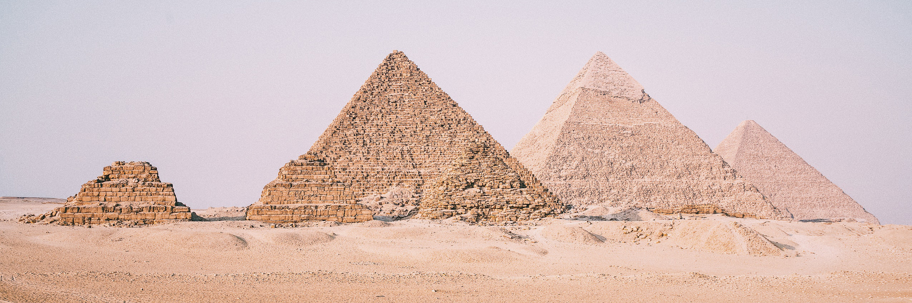
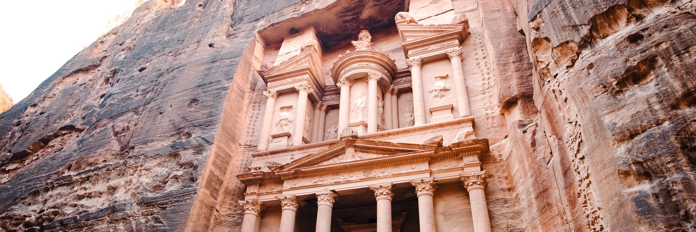

Story
Explore
Shop
More
About
Contact
Great Pyramid of
Giza (Egypt)
Colosseum (Italy)
Petra (Jordan)
Taj Mahal (India)
Great Wall of China (China)
Machu Picchu (Peru)
Christ the Redeemer (Brazil)
Chichen Itza (Mexico)
List View

Chapter 1: Great Pyramid of Giza (Egypt)
Chapter 2: Colosseum (Italy)

Chapter 3: Petra (Jordan)
Chapter 4: Taj Mahal (India)
Chapter 5: Great Wall of China (China)
Chapter 6: Machu Picchu (Peru)
Chapter 7: Christ the Redeemer (Brazil)
Chapter 8: Chichen Itza (Mexico)